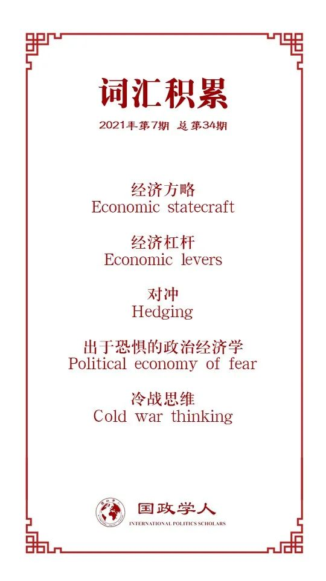

收录于合集

作品简介
【作者】 铃木胜吾(Shogo Suzuki)，曼彻斯特大学社会科学学院政治学高级讲师，研究领域包括中国外交政策、日本外交政策、中日关系与民族主义。
【编译】 常佳艺（国政学人编译员，北京大学国际关系学院）
【校对】 吴天麟
【审核】 赵怡雯
【排版】 黄晨蕊
【美编】 杜丛竹
【来源】 Shogo Suzuki (2021): Economic statecraft, interdependence, and Sino- Japanese ‘rivalry’, The Pacific Review , DOI:https://doi.org/10.1080/09512748.2021.1941209.
【归档】 《国际关系前沿》2021年第7期，总第34期
期刊简介
《太平洋评论》（ The Pacific Review ）是太平洋地区研究的主要平台，作为跨学科期刊，其宗旨和目标为打破研究领域之间以及学术界、新闻界、政府和商界之间的壁垒，重点关注政策问题。根据Journal Citation Reports显示，2019年该刊的影响因子为1.633，在区域研究类SSCI期刊中排名11/77，在国际关系类SSCI期刊中排名第35/95。
经济方略、相互依赖
**与中日对抗
**
Economic statecraft, interdependence,
and Sino- Japanese ‘rivalry’
Shogo Suzuki
内容提要
近年来，中国日益活跃的经济外交常被认为与其地缘战略利益紧密相连。分析人士经常声称，中国的经济方略将导致中日两国进入零和博弈状态。然而，本文对这一观点持批判态度。作者认为，尽管中日关系的某些方面确实存在对抗因素，但鉴于经济方略的多面性，不应过早地将这种观点应用于经济领域。在此基础上，本文对这种操之过急的结论的形成原因进行了分析：国际关系理论的二分法、学者的研究立场、经济方略动机的复杂性以及“中国威胁论”对于身份建构与消解国内反对声音的帮助等因素，均使得中国经济方略的战略考虑被过分强调，而带来共赢合作机遇的经济与商业动机却无人关注。现在视中日两国为经济方略领域的对手为时尚早，相关分析需要避免凭空制造对立与矛盾，使东亚地区的安全困境延展到经济领域。
文章导读
01
中国经济方略的崛起
经济方略（economic statecraft），又称经济外交，可被广义地定义为国家利用经济手段追求其外交政策目标，即国家有意操纵经济互动，以利用、加强或减少相关的战略外部性，从而实现国家关键目标的外交形式。经济方略涉及军事、经济、外交和信息等多种手段的运用和互动，旨在实现国家安全、经济繁荣、政治威望和影响力等多重目标，因此理应从广泛和多维的角度考虑。
就中国而言，经济方略大体上服务于三个核心目标：确保国家生存、维护稳定的国际环境以及增强其整体政治影响力。有充分证据表明，中国正利用经济方略来“得到它想要的”。通过提供对外直接投资/财政援助等“胡萝卜”策略，中国成功地使许多发展中国家从台湾省转向中国大陆；通过使用制裁等“大棒”措施，中国通过切断与朝鲜的输油管道，从而“鼓励”朝鲜重返六方会谈。中国利用柬埔寨对其投资的依赖，在中国南海领土争端中获得坚定的支持，成功地阻止了东盟对中国采取任何联合立场，而中国对缅甸、巴基斯坦、斯里兰卡或尼泊尔的援助也被认为是为了制衡印度对东盟日益增长的影响力。
中国于2013年9月宣布了“一带一路”倡议，这是中国经济方略中宏伟的倡议之一。而分析人士很快就指出了其地缘政治影响。日本经济产业省（METI）前官员铃木秀夫(Suzuki Hideo)坚信，“一带一路”倡议的目标国家与北京获得战略物资和维持稳定供应路线的意愿有关。2016年成立的“亚投行”也受到了类似的评论，即其成立在一定程度上是出于中国挑战美国霸权的愿望。中国学者也赞同这一分析，指出中国对西方在国际金融主导地位的不满，并认为亚投行将在解决这种结构性失衡方面发挥关键作用。
02
日方的反应：威胁抑或机会？
诸多分析人士认为，中国的崛起和中日关系不稳定的本质给东京带来了相当的不安全感，其结果是日本通过经济杠杆(economic levers)与中国针锋相对地竞争国际影响力。这一说法主要基于以下假设：首先，两国之间的竞争被认为是零和博弈，主要集中在地缘政治影响力上。其次，日本认为中国“特别值得关注和努力，以至于他们的关系在各自的政策计算和议程中占据了中心位置。”
中日两国在经济治理方面的竞争空间似乎很大，就实力的对称性而言，两国都有能力凭借自身的经济实力在东亚地区取得领导地位。然而，几个问题仍然存在。首先，在经济治国方面采用中日竞争观点的分析人士，往往把重点放在中日竞争最激烈、动员最大经济和外交资源的特定领域，比如高铁。但高铁是两国经济方略的总和吗？这使得其论述确实面临“选择因变量”的问题。反过来，这又引出了一个问题:日本是否真的有一种主流的看法，认为中国的经济方略对日本的政治影响力或地缘经济利益构成了零和威胁。这种竞争是否在政策议程中占据了中心位置，以至于产生了针对中国经济治国方阵的威胁的统一反应？如果零和竞争态势确实存在，就政策结果而言，我们本应看到一个更加强硬有力地抗衡中国的日本。
然而，日本主流媒体和政界对与中国经济政策有关的各种政策的报道似乎表明，日本将这些发展既视为挑战，也视为潜在的机遇。 目前仍没有明确的迹象表明，中国的经济方略被视为对日本自身政治影响力的零和威胁。 当然，这并不是说日本的政策制定者对中国积极的经济外交无动于衷：日本加入TPP谈判的决定，在一定程度上是因为它希望加强与美国及其盟友的关系，防止中国重写区域贸易规则；继TPP之后的《全面与进步跨太平洋伙伴关系协定》(CPTPP)延续了这一主题。日本提出的另一项旨在对抗中国影响的政策是“自由开放的印太战略”(FOIPS)，鉴于这一政策的目标国家与“一带一路”有重叠，可以认为这是一种制衡中国利用基础设施建设项目获得政治影响力和地区影响力的努力。
然而，仅仅关注竞争让我们忽略了这样一个事实，上述消极观点与非零和的积极观点并存。日本前首相安倍晋三表示，在贷款可持续、采购过程公开透明的情况下，日本愿意参与“一带一路”合作。在日本，部分民众也认为亚投行的出现是一个可喜的发展，认为现有区域金融机构根本无法满足亚洲对基础设施的需求，拥有另一种融资来源并非坏事。实际上，亚投行与其所谓的对手亚洲开发银行之间正在进行合作，2016年，两家银行签署了一份旨在促进合作的备忘录；截至2019年3月，亚行和亚投行已经共同资助了5个项目。
对竞争态势的执着也让我们忽视了日本外交举措的多面性，例如，TPP不仅仅是为了对抗中国的经济影响力，还为了促进日本的经济增长。FOIPS也同样如此，早在2013年“一带一路”倡议宣布之前，日本就支持推进区域互联互通。 它们并不是专门针对“中国威胁”而制定的反制措施，其促进地区经济韧性和互联互通的目标也反映了日本长期以来的外交倡议。
03
经济方略视角下的中日关系
日本对中国经济方策的反应表明，尽管一些人认为，中日两国在经济方略领域的竞争本质是零和的。然而，同样有声音认为中国的经济方略是合作或获得商业利益的潜在机遇。事实上，日本迄今为止的反应可以被描述为“对冲”（hedging），这表明日本不愿在“平衡- 追随”的连续光谱上直接选择一个极端。考虑到日本的经济规模和军事实力赋予日本有限的选择空间，日本没有理由不选择这一战略。
因此，从“对冲”的角度观察日本对中国经济方略的不同反应则更有意义。日本人意识到，商业和战略利益在中国的经济方略中是相互交织的。即便中国经济治国方略的某些方面可能削弱日本的区域影响力，需要采取应对措施，但其他方面仍会为日本提供可利用的商业机会。 中日两国经济互补性强，且拥有密集的供应网络，因此对中国出口产品需求的增长也可能意味着日本企业的潜在收益。 例如，日本不仅利用FOIPS来削弱中国对相关国家的影响力，也会藉此为日本企业提供商业机会，通过让中国参与多边区域秩序建设来分一杯羹；通过表明其参与“一带一路”部分项目的意愿，日本可以利用“一带一路”所能提供的商业机会，增强自身的经济影响力；日本可能会加强与亚洲开发银行的联系，以对冲亚投行日益增长的影响力，但如果条件合适，日本同样会帮助亚投行“社会化”，进入全球金融的规范秩序。简言之，相互依赖使竞争复杂化。
04
为什么会草率地形成错误判断？
综上所述，日本对中国经济方略的反应并非完全由竞争机制所主导。那为何学者会过早地断定这种对立的存在？本文提出了以下几点理由：
其一，经济方略中“战略目标”与“经济/商业利益”的关系往往相互交织且难以厘清。 尽管中方发起的经济方略往往出于多方考量，但如果学者无法判断某项政策是战略驱动抑或是经济驱动，则会导致对于地缘政治意图的过分强调。在中日关系的语境下，有学者认为，鉴于缅甸是两国获取资源供应的共同目标国，因此中日在对缅影响力和国家资源上的竞争将不可避免。这一主张基于中国将囤积缅甸自然资源以及日本无法获得替代市场的假设，然而没有一个先验的理由足以支撑这个假设。
其二，我们不能忽视国际关系理论中“平衡与追随”、“现实主义与自由主义”的二分法所产生的持久影响 ，这些二分法让我们对处于两者之间的政策结果视而不见。因为商业和战略动机并存，经济方略极度复杂。针对任意单一事件都可以做出截然相反但又同样有效的解释，而这仅仅取决于我们聚焦的视角。
其三，学者对经济方略本身的研究，往往向国家如何使用经济工具来实现安全目标倾斜。 这是因为决策者对于经济方略与安全政策的理解受到权力分布格局的影响：在一个单极结构中，主导国将尽可能融合经济与安全政策，使其相互补强，从而维护其主导地位；而在一个多极结构中，利用经济工具贿赂盟友则变得更为普遍。由于研究学者的西方背景，对于亚太地区政治动态的分析往往受到美国中心论的渗透。学者普遍认为该地区处于日益不平衡的多极环境，加之对美国单极时代结束的忧虑，使其将中国经济方略视为对美国霸权与均势的破坏，从而强化了中国将主要出于地缘政治目的使用经济外交的看法。
其四，分析人士忽略了日本政客通过强调中国威胁论而追求自身政治议程的战略可能性，进而夸大了中日两国的对立属性。 就日本国内而言，TPP与CPTPP由于农业部门自由化的目标而面临农村地区的强烈反对，进而影响了自民党的支持率。因此强调中国日益迫近的威胁有助于消解国内对于执政党的反对。就对外关系而言，强调中国威胁也可以被视为日本向美国发送的信号，即表明日本无意追随中国。在日本一直警惕美国的孤立主义冲动，并寻求与美国保持更紧密关系的背景下，这一政治姿态至关重要。
其五，“出于恐惧的政治经济学”（political economy of fear），即从政治经济利益角度出发强调中国威胁，也在日本自身身份的建构过程中扮演了重要角色。 而这导致日本学者的观点倾向于强调中国行为的威胁性。将日本描绘成一个为声望、领导权和生存而战的国家会激起民族主义情绪与民族自豪感，从而强化对于中国经济方略的片面看法。
05
结论
大国崛起的现象似乎几乎不可避免地带来了衰落的霸权与新挑战者之间的零和对抗，而当前的中日关系，即“旧”地区大国日本和崛起中国的关系，一直无法避免这一视角的影响。中日两国在某些领域存在着竞争因素，但这并非全部。忽略不同地区和不同议题之间的区分将导致对于中日关系驱动机制的过于简化的分析，而这一缺陷在分析经济方略时显得尤为显著。学者们必须意识到，在一国发起经济倡议时，其商业/经济利益与战略目标共存交织，这一模糊性使得各类行为体难以形成共同的“敌我对抗”的反应，因而经济方略间的竞争要远比其他外交工具困难。
然而，理论定位的非黑即白性加之学者们自身的知识立场有时会不可避免地制造对立。学者们急于寻找中国经济治国方略的地缘政治含义，却忽视了一个简单但重要的观点，即经济上的相互依赖使情况变得复杂。过度强调中国经济方略的战略要素在一定程度上是出于经济相互独立的美苏对抗的冷战时代的过时观点，这也反过来印证了分析过程中冷战思维（cold war thinking）的普遍存在。至少自主权国家体系出现以来，学者们尚未看到一个大国在深度、复杂的经济相互依存的背景下崛起。忽视这一点，我们就无法理解与经济方略相关的多维特征。
尽管认为中国和日本之间存在“新兴竞争”几乎已成为一种趋势，但就目前而言，这一观点是片面的。从这一立场出发，学者们与政策制定者更有可能“说服自己”陷入一种全方位的竞争：中日经济零和博弈说辞的持续出现可能会引发双方的严重焦虑，并最终形成专门针对对方的零和竞争行为。谨慎的做法可能是，不去想象一种根本不存在的竞争。东亚内部已经存在许多安全困境，但这些困境大多局限于政治与安全领域。学者们要尽量避免安全困境蔓延到经济领域，破坏两国合作的遗产——这一遗产在一定程度上制约了东亚两个地区大国之间代价高昂的冲突。
译者评述
中日经济关系始终是中日双边关系的重要一环。在两国邦交正常化之前，中日关系以民间经贸关系为主导，经贸关系是中日关系的“晴雨表”。而在恢复邦交、进入蜜月期的70-80年代，鉴于经济格局中日本的绝对主导地位与贸易需求的互补性，双方在经济发展上互有很高的需求，中日经济关系进入了黄金时代。从80年代后半期开始，中日两国在发展方向和相互需求中的错位逐渐显现，双方互信逐渐消失。在经济方略领域，中国不再是韬光养晦的规范接受者、ODA的被援助国，而逐渐成为了地区经济秩序的制造者与主导者。而以2010年中国GDP超越日本为分水岭，日本在经济领域的失落感逐渐转化成涉及政治、安全等多领域的战略焦虑感。从这一角度而言，中日两国作为经济发达的大国，在经济领域将不可避免地持续存在竞争。
但这一竞争并非是零和的。从日本外交的角度而言，日本同样面对特朗普发起的贸易战的压力，同时由于新兴市场国家群体性崛起和国际权力转移的长期趋势，日本在二战后赖以生存发展的自由主义国际秩序受到冲击，而这一趋势对于日本的影响甚至甚于欧洲，因此日本当前的外交战略整体呈现“对冲”的态势，在防范中国的同时也在推动《中日韩自由贸易谈判》（CJK FTA）与《区域全面经济伙伴关系协定》（RCEP），双方的互利共赢并非空想。
现有的以西方为中心的研究往往过分强调中日两国的竞争关系，而忽略了双方在经贸乃至战略意图上的契合之处。因此，本文的结论是值得警醒的：政策制定者必须要意识到两国经济方略的一致性，避免东亚安全困境进一步转移到经济领域。
词汇整理

文章观点不代表本平台观点，本平台评译分享的文章均出于专业学习之用, 不以任何盈利为目的，内容主要呈现对原文的介绍，原文内容请通过各高校购买的数据库自行下载。
好好学习，天天“在看”
国政学人
支持学术公益与知识传播
微信扫一扫赞赏作者 __赞赏
已喜欢，对作者说句悄悄话
取消 __
发送给作者
发送
最多40字，当前共字
上一页 1/3 下一页
长按二维码向我转账
支持学术公益与知识传播
受苹果公司新规定影响，微信 iOS 版的赞赏功能被关闭，可通过二维码转账支持公众号。